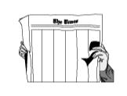

It is that time of year again, when a young man's fancy turns to thoughts of writing Perl News columns for The Perl Journal.
By the time this glossy rag hits your cubicle's inbox, Perl 5.005_03 should be released. It is the first release of Perl since before the Perl Conference, and the first with Graham Barr as pumpking.
The pumpkin for 5.004_05, the latest maintenance release of the previous version of Perl, has been handed off from Tim Bunce to Chip Salzenberg, the original pumpkin holder for 5.004.
Meanwhile, in another part of Gotham, development on 5.006 progresses under the watchful eye of Gurusamy Sarathy, and as of this writing the latest development release is 5.005_56 (which now includes JPL, Java/Perl Lingo, making good on O'Reilly's August promise to release JPL as free software).
The Perl community is busy, as ever. The O'Reilly Perl Conference is headed into its third year, and O'Reilly has posted a Call for Participation, with abstracts for papers due April 9. TPC 3.0 will be held in Monterey, CA, on August 2124, and will coincide with Linux, FreeBSD, Sendmail, and Open Source conferences.
http://conference.perl.com/pace/conf/confdocs/call.html
http://conferences.oreilly.com/
But O'Reilly isn't stopping there. The company is also holding Perl tutorials in Boston on April 27 and 28.
And for those who can't fathom the fee of the O'Reilly offerings, Kevin Lenzo is organizing Yet Another Perl Conference, a low-cost gathering of Perlers at Carnegie Mellon University in Pittsburgh, PA, on June 24 and 25. Details are still being worked out, so keep checking Perl News and http://www.cs.cmu.edu/~lenzo/yapc/ for more details.
The Second German Perl Conference will probably take place March 8-10, 2000.
Many more Perl Mongers (http://www.pm.org/) groups have sprouted up across the globe. New groups in the United States include: Albuquerque NM, Anchorage AK, Charlotte NC, Charlottesville VA, Denver, Edmond OK, Hartford CT, Jacksonville FL, Kansas City MO, Knoxville TN, Las Vegas, Lynchburg VA, Miami, Nashua NH, Newald WI, Norwalk CT, Orlando FL, San Diego, Santa Rosa CA, Sherman Oaks CA, Tallahassee FL. Other new groups around the world include: Åarhus (Denmark), Bandung (West Java), Bath (UK), Beijing (China), Belfast (Ireland), Brisbane (Queensland, Australia), Bristol (UK), Brunei, Chennai (India), Curitiba (Brazil), Delhi (India), Glasgow (Scotland), Helsinki (Finland), Islamabad (Pakistan), Jakarta (Indonesia), Karachi (Pakistan), Liege (Belgium), Limerick (Ireland), Magyar (Hungary), Malaysia, Mexico City, Montevideo (Uruguay), Moscow, New Zealand, Paris, Perth (Australia), Rome (Italy), Salzburg (Austria), Sarawak (East Malaysia), Shanghai (China), Singapore, Switzerland, Winnipeg (Manitoba, Canada), and Zhengzhou (China).
Phew. Say all that twelve times fast.
A new Perl Mongers FAQ is available at http://www.pm.org/faq.html, and the Perl Mongers have also added several mailing lists, including perl-jobs-announce and perl-jobs-wanted (run by Uri Guttman), perl-mongers-announce (low volume, announce-only), and perl-mongers-general. To subscribe, mail majordomo@hfb.pm.org with the body subscribe list mail-address.
The Perl AI list has moved to perl-ai@netizen.com.au.
There are several new MacPerl mailing lists up too, inaugurating the brand-new macperl.org domain. Two old lists have moved there: macperl and macperl-announce. New lists are macperl-modules, macperl-toolbox, macperl-webcgi, macperl-porters, macperl-anyperl (discussion of cross-platform Perl), and macperl-forum (open discussion about anything relating to Perl, Macs, Apple, and so on). To subscribe to any of these lists, send mail to listname-request@macperl.org, with a body of subscribe.
Prime Time Freeware, which hosts the new MacPerl lists, has moved The MacPerl Pages to http://www.macperl.com/. In other MacPerl news, yours truly has released cpan-mac, an all-in-one, easy-to-install package containing everything one needs to download, unpack, and install modules, using either the CPAN module itself, or separate droplets that can perform the unpacking and installing. (The only thing it's missing is MacPerl itself.)
http://www.perl.com/CPAN/authors/id/CNANDOR/
Also in that directory is a version of MacPerl built with the -DDEBUGGING flag, for use with Chip Salzenberg's article in TPJ #12.
Currently over 20 modules have been ported or built for MacPerl and are listed on the MacPerl Module Porters page at http://pudge.net/mmp/. Among the modules available are DBI, Storable, Math::Random, and XML::Parser.
Most modules work fine under any platform, but to know whether or not a given module will work on yours, check the new home of the CPAN Testers at http://www.perl.org/cpan-testers/. More testers are always welcome; see the page for details.
The Linux Journal readers recently picked Perl as the favorite programming language. We wonder, what would be the favorite OS of the Perl Journal readers? Mutual Admiration Society aside, Perl was also a finalist in PC Magazine's 1998 Technical Excellence Award in the Development Tool category.
http://www.zdnet.com/pcmag/special/techex98/dev.html
The other two products up for the award were from Microsoft.
ActiveState, which launched the Perl Clinic with the Paul Ingram Group to provide commercial Perl support, has now launched PerlDirect, a subscription support program featuring quarterly CDs, a Y2K test suite, weekly bulletin, and incident-based support through the Perl Clinic.
http://www.ActiveState.com/PerlDirect/
ActiveState has also been busy releasing new software. ActivePerl, the company's build of Perl 5.005_02 and related utilities, has reached build 509, the Perl Development Kit 1.1 is in release candidate status, and PerlEx 1.1 was released. PerlEx is a plugin for NT web servers to speed CGI performance.
The Apache folks have a mod_perl developer's mini-guide available at http://perl.apache.org/guide/.
POE (Perl Object Environment), by Rocco Caputo, is a programming framework for event-driven state machines. It is a cooperative multithreading model in pure Perl. It is a high-level interface to select(), alarms, and IPC. It is not easily explained by us. We hear there is a financial application using it that moves a billion euros a day.
Raima (http://www.raima.com/) has released Velocis Database Server 2.1, featuring DBI support, among other new features.
The Data Display Debugger, a GUI front end to command-line debuggers for Unix and Windows at http://www.cs.tu-bs.de/softech/ddd/, has added Perl support.
WishPerl is a pair of two (small) scripts, one in Perl and one in Tcl, enabling you to painlessly breed Perl modules with a Tcl/Tk/Tix GUI. Works on Unix with Perl 5, Win32 with YeP-perl, and MacPerl with Tcl/Tk 8.0.4 and the Mac::AppleEvents::Simple and Mac::Apps::Launch modules. It's available at http://www.qub.com/group/.
With its help, you can add a Tcl/Tk GUI to your Perl program quickly, make a new application with GUI events processed by some Perl engine, or just debug your Tcl script.
Sean M. Burke's Mac::FileSpec::Unixish allows programmers to translate native filespecs into a Unixish format, and then convert Unixish pathspecs back into a native format. This module does the Right Thing under MacPerl or a Unix Perl, so it's now easier to write code under MacPerl and have it run under a Unix Perl, or vice versa. Sean also released Sort::ArbBiLex, which manufactures functions that sort according to any lexicographic sort order the user supplies, for single- or multi-character glyphs, without recourse to locales (ArbBiLex stands for "arbitrary bi-level lexicographic"). In addition, Sean wrote Class::ISA, providing functions that report the class names of an @ISA tree. It is useful for reading the $VERSION numbers across a network of classes and for various data-inheritance tasks.
You want books? We've got new ones. Osborne/McGraw-Hill published Perl Annotated Archives, by Martin C. Brown, which features collections of programs that are heavily annotated, to aid in learning. Dave Roth, author of several Perl for Win32 extensions, wrote Win32 Perl Programming: The Standard Extensions for Macmillan. O'Reilly offers Perl in a Nutshell (Ellen Siever, Stephen Spainhour, and Nathan Patwardhan) and Learning Perl/Tk (Nancy Walsh). And Addison-Wesley published Perl Power!, by Michael Schilli.
Tom Christiansen just released the Perl Module-Writers Workbench (pmtools), a suite of small programs to help manage modules. It follows the "keep it small" notion of many tiny tools each doing one thing well, with separate tools for finding modules, getting module versions, and so on. Available at http://mox.perl.com/misc/pmtools-1.00.tar.gz.
Net::Whois 0.23 has been released by Chip Salzenberg, fixing the parsing code to adapt to the new Internic format.
The Text::Thesaurus module, by Martin Hamilton and Jon Knight, supports ISO thesaurus files from Perl programs. It's part of the ROADS bundle, which you can think of as a free version of Yahoo.
Mark-Jason Dominus released Text::Template, a module for filling text templates.
Lingua::EN::Syllable, from Greg Fast, estimates the number of syllables in an English word.
Earl Hood's popular MHonArc, a program that converts MIME mail messages into an HTML archive, is now at version 2.3.3.
Gimp, the Perl extension for the popular graphics package, the Gimp, has reached "Mature" status on the module list. The current version is 1.053.
The Bioperl Project (http://bio.perl.org/) is a coordinated effort to collect bioinformatics and computational biology techniques into a set of standard, well-documented, and freely available Perl modules. The international group of developers has released its first set of core modules, and is available under the CPAN Bio:: namespace.
Mark Hershberger's Image::Grab module downloads images from the web.
Johan Vromans just released three PostScript::Font modules that help you manipulate Type 1 PostScripts fonts from Perl.
The dupie program, by Mark Hewitt, generates pie charts representing disk usage.
This column's online companion is The Perl Institute's Perl News, at http://www.perl.org/news.html. To join the daily-news@perl.org mailing list, sent (semi-)daily with all the latest Perl news, send the message "subscribe daily-news" to majordomo@perl.org.
If you have any Perl news, including new modules or major module updates, or have any comments or questions about Perl News, please send it to news@perl.org.
__END__
The Comprehensive Perl Archive Network (CPAN)The CPAN is the world's distributed, replicated repository of Perl utilities. Unless noted otherwise, you can find everything in this column on the CPAN. Visit Tom Christiansen's multiplexer to be redirected to a CPAN site near you: You'll be able to find the modules under the author's name, at http://www.perl.com/CPAN/modules/by-authors. Jon Orwant's http://www.perl.com/CPAN/modules/INSTALL.html has instructions on how to build modules on all major operating systems, and CPAN/CPAN.html lists all of the modules and scripts on the CPAN. You can also use Andreas König's CPAN module to
automatically install modules. Once you've installed
it, If you'd like to contribute your module to the CPAN, good for you! Read CPAN/modules/04pause.html for details. |
Chris Nandor (pudge@pobox.com) says he was home all night, hacking MacPerl. The #perl logs seem to support his story, but they could have been faked.